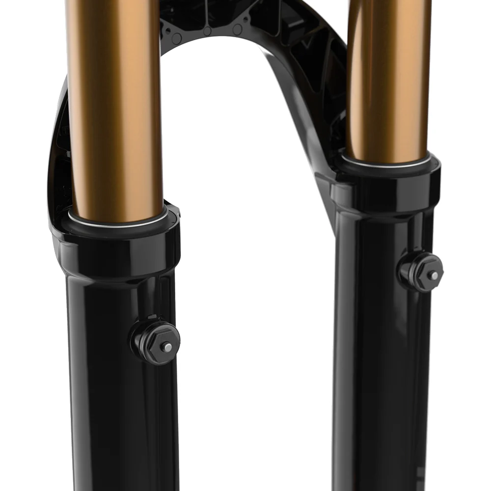

Alcune forcelle Fox, in particolare i modelli 38 e 40, presentano due piccoli pulsanti sui foderi. Molti rider non sanno a cosa servono, ma hanno una funzione molto importante.
Ti è mai capitato di arrivare in cima a una montagna, dopo una lunga salita o un giro in funivia, e notare che la forcella è diventata più dura, meno reattiva o meno fluida nei primi centimetri di escursione?
Questo succede perché, con il cambio di altitudine, all’interno dei foderi si crea una sovrappressione. I pulsanti di sfiato servono proprio a **rilasciare l’aria in eccesso**, riportando la forcella a funzionare nel modo corretto, garantendo **sensibilità iniziale**, grip e comfort.
In passato si usavano metodi più rischiosi per far sfiatare l’aria (come infilare fascette), ma oggi Fox ha integrato questa funzione direttamente nel design della forcella.
 ← Torna alle curiosità